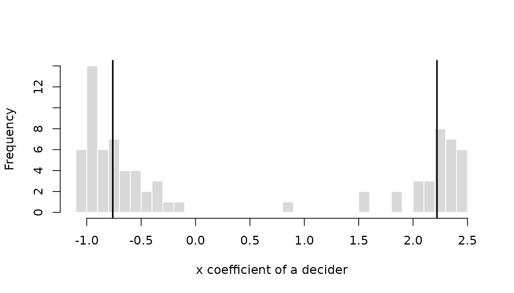
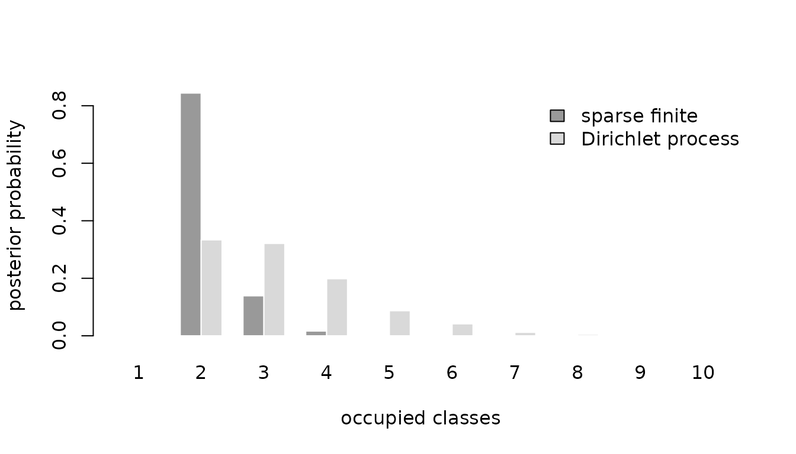

A model with fixed coefficients says that everyone weighs price,
time, and comfort in the same way. That is rarely true. Some travelers
watch the fare, others the clock; some households would pay a premium
for a local electricity supplier, others would not. This vignette covers
the two ways RprobitB (Oelschläger and Bauer 2026)
lets preferences differ between deciders: random coefficients, which
spread them continuously over the population, and latent classes, which
sort deciders into groups. Both are requested through an argument of
fit(), as are the specification choices of
vignette("v02_model_variants"), and both build on the
fixed-coefficient model of vignette("v01_get_started").
Oelschläger (2026b) treats the
methodological background.
Each section first estimates the variant on simulated data and compares the estimates with the parameters that generated them, then applies it to empirical data from the mlogit package (Croissant 2020) and the choicedata package (Oelschläger 2026a). Panel data are essential here: the population distribution of a coefficient is learned from deciders observed repeatedly, so all simulations use several choices per decider.
Random coefficients
Terms named in random_effects receive a coefficient of
their own for every decider, drawn from a population distribution that
the sampler estimates along with everything else. Such hierarchical
models capture continuous preference heterogeneity and allow inference
about the coefficients of individual deciders (Allenby and Rossi 1998).
An unnamed vector requests correlated normal effects. A named vector
selects the mixing distribution of each term, written as
"<covariate>" = "<distribution>", where
"ASC" names the alternative-specific constants:
| Value | Distribution | Coefficient |
|---|---|---|
"cn" |
correlated normal | any sign |
"n" |
uncorrelated normal | any sign |
"cln" |
correlated log-normal | positive |
"ln" |
uncorrelated log-normal | positive |
"cln-" |
correlated log-normal | negative |
"ln-" |
uncorrelated log-normal | negative |
Two choices are behind these six values. The first is the shape of
the distribution. A normal coefficient may take any value, which is the
natural choice for an attribute that some deciders like and others
dislike. A log-normal coefficient is the exponential of a normal
variable and is therefore always positive, or, with the trailing minus,
always negative. Use it when theory fixes the sign: a higher price
should not raise the utility of any decider, however price-insensitive
they are. Log-normal effects are estimated on the latent normal scale,
so mu, Omega, and the individual draws refer
to the normal variable whose exponential enters the utility.
The second choice is whether an effect is correlated with the other
correlated effects. Deciders who care about travel time may also care
about comfort, and the c prefix lets the model learn that.
Uncorrelated effects keep their own variance but no covariance with
anything else, which shows up as zeros in the covariance matrix
Omega.
The proof of concept combines both choices. The price coefficient is negative log-normal and therefore uncorrelated, while travel time and comfort receive correlated normal effects with a positive covariance.
mixing <- fit(
choice ~ price + time + comfort | 0,
random_effects = c(price = "ln-", time = "cn", comfort = "cn"),
n_deciders = 400,
n_occasions = 12,
dgp_parameters = list(
beta = c(price = -1, time = -0.8, comfort = 0.5),
Omega = rbind(c(0.25, 0, 0), c(0, 0.4, 0.2), c(0, 0.2, 0.3))
),
iterations = 2000,
warmup = 1000,
chains = 2,
save_individual_draws = TRUE
)
summary(mixing)
#> Bayesian probit choice model
#> Formula: choice ~ price + time + comfort | 0 | 0
#> Samples: 1000 retained per chain, 2 chains
#>
#> variable dgp mean mode sd rhat ess_bulk
#> mu[price] -1.00 -0.983 -0.976 0.0590 1.09 18.34
#> mu[time] -0.80 -0.799 -0.798 0.0529 1.15 9.39
#> mu[comfort] 0.50 0.522 0.522 0.0444 1.08 21.13
#> Omega[price,price] 0.25 0.349 0.308 0.0883 1.46 4.10
#> Omega[time,time] 0.40 0.472 0.446 0.0737 1.33 5.06
#> Omega[time,comfort] 0.20 0.208 0.209 0.0365 1.03 74.59
#> Omega[comfort,comfort] 0.30 0.367 0.348 0.0548 1.22 7.29The dgp column shows what the three specifications
produce. All three means are recovered, and for the price coefficient
mu[price] is the mean of the latent normal variable, so the
coefficient entering the utility is minus its exponential and stays
negative for every decider. The covariance matrix mirrors the
specification: time and comfort share the
estimated covariance Omega[time,comfort], while
price has no covariance entry with either of them, because
an uncorrelated effect has none to estimate.
interpret() turns such coefficients into trade-offs. For
a random effect it uses the coefficient of the median decider, for the
log-normal price therefore minus the exponential of
mu[price]:
interpret(mixing, reference = "price")
#> 1 `time` compensates -2.14 `price` (95% interval -2.48 to -1.83)
#> 1 `comfort` compensates 1.4 `price` (95% interval 1.14 to 1.66)The dgp_parameters put the latent mean of the price
effect at -1, so the median price coefficient is
-exp(-1), about -0.37. One unit of time is
therefore worth -2.17 units of price and one unit of comfort 1.36, which
the intervals cover.
Individual coefficients are what the panel buys.
coef(level = "individual") returns the posterior mean
coefficient of every decider, on the latent normal scale for log-normal
effects.
head(coef(mixing, level = "individual"))
#> price time comfort
#> 1 -0.8163486 -0.3926287 1.1094096
#> 2 -1.0311631 0.4183956 0.3786188
#> 3 -1.1071621 -1.1925806 0.3301504
#> 4 -1.2367155 -1.5643469 -0.3534857
#> 5 -0.5936260 -0.3103094 0.7787451
#> 6 -1.0373844 -1.5510612 0.4398722Their spread is the estimated heterogeneity. Turning the latent price values into coefficients shows that every decider dislikes a higher price, and that the tenth percentile reacts almost twice as strongly as the ninetieth.
individual <- coef(mixing, level = "individual")
round(quantile(-exp(individual[, "price"]), c(0.1, 0.5, 0.9)), 2)
#> 10% 50% 90%
#> -0.54 -0.36 -0.27A picture says it faster. The histogram shows the price coefficient of each of the 400 deciders, with the three quantiles above marked. Every decider sits on the negative side, which is what the log-normal specification enforces, and the tail to the left holds those who react most strongly to a higher price.
price <- -exp(individual[, "price"])
hist(
price,
breaks = 30, col = "grey85", border = "white",
main = "", xlab = "price coefficient of a decider"
)
abline(v = quantile(price, c(0.1, 0.5, 0.9)), lwd = 2)How much is a local electricity supplier worth?
The Electricity data of the mlogit
package (Croissant
2020) come from a stated choice experiment in which 361 US
households chose 8 to 12 times among four hypothetical suppliers that
differ in price (pf), contract length (cl),
whether the supplier is local (loc) or well-known
(wk), and whether it offers time-of-day (tod)
or seasonal (seas) rates (Huber and Train 2001). Huber and Train (2001) used these data to check whether
hierarchical Bayesian and classical estimates of individual preferences
agree, and found that they largely do. The attribute columns end in the
supplier number without a delimiter, pf1 to
pf4, so an underscore is inserted first, and the choice
occasions of a household are numbered in the order of the rows.
Contract length and locality receive correlated normal random
coefficients, the other three attributes one coefficient for everyone.
Keeping the number of random coefficients small is deliberate: each one
adds a row and a column to every covariance draw, and the chains below
have to be long enough that the result can be believed rather than
merely displayed. Fixing the price coefficient to -1
identifies the scale and puts every other coefficient in cents per kWh,
that is, expresses it directly as a willingness to pay. All six
attributes have to enter the model: suppliers with time-of-day or
seasonal rates carry a price of zero in these data, so leaving their
dummies out would hand their missing price level to the price
coefficient and turn it positive.
data("Electricity", package = "mlogit")
names(Electricity) <- sub("([a-z]+)([1-4])$", "\\1_\\2", names(Electricity))
Electricity$occasion <- ave(Electricity$id, Electricity$id, FUN = seq_along)
electricity <- fit(
choice ~ pf + cl + loc + wk + tod + seas | 0,
data = Electricity,
random_effects = c("cl", "loc"),
column_decider = "id",
column_occasion = "occasion",
scale = c(pf = -1),
iterations = 3000,
warmup = 1500,
thin = 2,
chains = 2,
save_individual_draws = TRUE,
progress = FALSE
)
summary(electricity)
#> Bayesian probit choice model
#> Formula: choice ~ pf + cl + loc + wk + tod + seas | 0 | 0
#> Samples: 750 retained per chain, 2 chains
#>
#> variable mean mode sd rhat ess_bulk
#> beta[wk] 1.5224 1.5259 0.0754 1.01 295.9
#> beta[tod] -8.7348 -8.7287 0.0765 1.01 200.5
#> beta[seas] -9.2978 -9.2676 0.0840 1.02 216.6
#> mu[cl] -0.2165 -0.2152 0.0274 1.01 723.4
#> mu[loc] 2.0493 2.0366 0.1259 1.00 372.2
#> Omega[cl,cl] 0.1886 0.1839 0.0223 1.00 359.5
#> Omega[cl,loc] 0.0459 0.0402 0.0508 1.00 295.8
#> Omega[loc,loc] 2.2652 2.1807 0.3320 1.00 326.6
#> Sigma[2,2] 7.0883 7.0644 0.7139 1.03 52.8
#> Sigma[2,3] 2.8021 2.6859 0.5159 1.04 43.3
#> Sigma[3,3] 5.8244 5.7776 0.6674 1.00 99.8
#> Sigma[2,4] 3.3193 3.1529 0.4972 1.12 18.0
#> Sigma[3,4] 2.7979 2.6260 0.4605 1.03 59.3
#> Sigma[4,4] 6.5651 6.3676 0.7563 1.11 16.1The four supplier attributes other than price and contract length are
dummy variables. Households dislike long contracts and prefer local and
well-known suppliers, the three signs that the original analysis reports
as well. Because the price coefficient is fixed,
interpret() reads the means directly as willingness to pay
in cents per kWh and attaches credible intervals:
interpret(electricity, effects = c("cl", "loc", "wk"))
#> 1 `cl` compensates -0.217 `pf` (95% interval -0.271 to -0.164)
#> 1 `loc` compensates 2.05 `pf` (95% interval 1.81 to 2.3)
#> 1 `wk` compensates 1.52 `pf` (95% interval 1.38 to 1.67)On average, households would accept a price about 2 cents per kWh
higher for a local supplier, and every additional year of contract
length would have to be compensated by a price about 0.22 cents lower.
The Omega[...] variables describe how widely these
valuations differ between households: the standard deviation of the
locality premium is 1.5 cents, so the households disagree about it by
more than its average size.
A word on cost. This fit takes a few seconds because it draws one coefficient pair per household in every iteration. Doubling the households roughly doubles the time, and each further random coefficient adds a row and a column to every covariance draw. The five-attribute model on all 361 households that the original study used is a matter of minutes rather than seconds, and it needs far more than four thousand iterations before its covariance entries settle down.
Latent classes
A single normal distribution is a strong assumption about how
preferences are spread across a population. Perhaps there are commuters
and leisure travelers, or households that care about price and
households that care about service. latent_class_effects
names the effects that differ between classes latent
classes. For a random effect this replaces its normal distribution by a
finite mixture of normals, which yields the latent-class mixed
multinomial probit model of Oelschläger and Bauer
(2021); Oelschläger (2026b) places it among the
broader challenges of modeling choice-behavior heterogeneity. Random
effects that are not named keep one distribution for all deciders, and a
named coefficient that is not random gets one value per class without
varying within it, which a later subsection shows. Three different
questions call for three different specifications:
-
class_update = "fixed"when exactly substantively meaningful classes are assumed; -
class_update = "sparse"whenclassesis a deliberately generous upper bound and redundant classes should empty out; -
class_update = "dirichlet_process"for a Dirichlet-process mixture whose number of occupied classes is itself random.
These models answer different questions, so pick one when you design
the study rather than after seeing the class-specific results. A fourth
option, class_update = "weight_based", reproduces the
split/remove/merge heuristic of earlier RprobitB
versions; it is a search procedure, not another Bayesian model.
All four updates are demonstrated on one simulated data set with two
classes. The fixed-class fit simulates it; the other three are refits of
it through update(), which reuses its simulated data and
replaces only the arguments that are named, so that all updates are
judged on identical observations. The empirical application is shown for
the fixed update.
A fixed number of classes
For class_update = "fixed", classes = K
fixes the number of classes and every class stays occupied, which is the
direct specification for a filled
-class
model chosen a priori. If classes should instead be allowed to empty,
that is the question the sparse finite mixture below answers.
The fixed model uses
.
Its default class_concentration = 1 is uniform on the
weight simplex;
favors unequal weights near its boundary and
shrinks weights toward
.
This prior remains influential when the likelihood separates the classes
only weakly. It can be fixed to another positive scalar or given a gamma
hyperprior with, for example,
prior = list(class_concentration = c(shape = 2, rate = 2)).
Report the choice and check sensitivity whenever class sizes drive the
interpretation.
Which class is called the first one is arbitrary: swapping the labels leaves the likelihood unchanged, so the sampler may swap them mid-run and a posterior mean would average over both meanings. Ordering the classes by one parameter, say by decreasing weight, does not reliably repair this (Stephens 2000). RprobitB instead leaves the sampler free and relabels the retained draws afterwards. It reads off a representative grouping of the deciders from the posterior co-clustering matrix (Dahl 2006), matches every draw’s allocation to it (Papastamoulis and Iliopoulos 2010), and permutes weights, means, covariances, and allocations accordingly. Sorting the relabeled weights at the end is a naming convention, not the thing that identifies the classes.
The proof of concept uses eight occasions per decider and two
well-separated classes: a majority whose coefficient is centered at
-1 and a minority centered at 2. These
conditions are deliberately favorable, because class-specific
distributions are hard to learn from short panels. Two chains of four
thousand iterations are long enough here that the diagnostics in the
summary can be taken at face value.
mixture <- fit(
choice ~ x | 0,
random_effects = "x",
latent_class_effects = "x",
classes = 2,
n_deciders = 80,
n_occasions = 8,
save_individual_draws = TRUE,
dgp_parameters = list(
beta = list(c(x = -1), c(x = 2)),
Omega = list(matrix(0.2), matrix(0.2)),
weights = c(0.6, 0.4)
),
iterations = 4000,
warmup = 2000,
chains = 2,
progress = FALSE
)
summary(mixture, variables = c(
"weight[1]", "weight[2]", "mu[x,1]", "mu[x,2]",
"Omega[x,x,1]", "Omega[x,x,2]"
))
#> Bayesian probit choice model
#> Formula: choice ~ x | 0 | 0
#> Samples: 2000 retained per chain, 2 chains
#>
#> variable dgp mean mode sd rhat ess_bulk
#> weight[1] 0.6 0.607 0.618 0.0601 1.00 398.3
#> weight[2] 0.4 0.393 0.382 0.0601 1.00 398.3
#> mu[x,1] -1.0 -0.761 -0.736 0.1087 1.00 335.4
#> mu[x,2] 2.0 2.219 2.221 0.3363 1.03 56.1
#> Omega[x,x,1] 0.2 0.201 0.141 0.0982 1.01 156.1
#> Omega[x,x,2] 0.2 0.410 0.190 0.4110 1.01 46.7The relabeled weights and means can be read class by class. The class
near -1 holds about half of these 80 deciders, a little
less than its population weight of 0.6, and the class near
2 the rest. The class variances are the least precise
entries, but rhat stays at the threshold and the effective
sample sizes are in the hundreds, so the table describes the posterior
rather than one chain’s wanderings. That check is worth repeating for
every mixture fit, because relabeling cannot repair poor mixing or weak
class separation.
The three updates below relabel their draws in the same way, so their
summaries carry class-specific weights and means as well. Where the
number of classes varies, a class exists only in part of the draws, and
the occupied column reports that share. Classes that no
decider ever occupies are left out, which is why the class indices in
the tables below may skip a number. The refits on shared data have no
dgp column, so a small helper compares them with the stored
truth: the most probable number of occupied classes, and, after
assigning every decider to the true class whose mean is closer to their
posterior mean coefficient, the share of deciders in the second class
and the average coefficient in each class. The true weight is the
population weight; the realized share among 80 simulated deciders
differs from it by sampling variation.
truth <- mixture$simulation$dgp_parameters
class_means <- c(truth$beta[[1]][["x"]], truth$beta[[2]][["x"]])
recover_classes <- function(x) {
occupancy <- latent_class_diagnostics(x)$occupancy
individual <- coef(x, level = "individual")[, "x"]
upper <- individual > mean(class_means)
data.frame(
variable = c("n_classes", "weight[2]", "mu[x,1]", "mu[x,2]"),
dgp = c(length(truth$weights), truth$weights[2], class_means),
estimate = c(
occupancy$n_classes[which.max(occupancy$probability)],
mean(upper), mean(individual[!upper]), mean(individual[upper])
)
)
}
recover_classes(mixture)
#> variable dgp estimate
#> 1 n_classes 2.0 2.0000000
#> 2 weight[2] 0.4 0.4000000
#> 3 mu[x,1] -1.0 -0.7740019
#> 4 mu[x,2] 2.0 2.1637702The two classes are visible in the individual coefficients. Each decider contributes one value, and the two estimated class means mark where the mixture places its classes.
individual_x <- coef(mixture, level = "individual")[, "x"]
hist(
individual_x,
breaks = 30, col = "grey85", border = "white",
main = "", xlab = "x coefficient of a decider"
)
abline(v = coef(mixture)[c("mu[x,1]", "mu[x,2]")], lwd = 2)
Two clearly separated groups of deciders, one on either side of zero, and almost nobody in between: that is the pattern a mixture is meant to find. A single normal distribution would have to put most of its mass where no decider actually is.
The label-invariant co-clustering matrix and the allocation uncertainty are available regardless of class names:
class_diagnostics <- latent_class_diagnostics(mixture)
class_diagnostics$occupancy
#> n_classes probability
#> 1 2 1
class_diagnostics$membership[1:6, ]
#> class_1 class_2
#> 1 0.99500 0.00500
#> 2 0.99750 0.00250
#> 3 0.99625 0.00375
#> 4 0.99350 0.00650
#> 5 0.00025 0.99975
#> 6 0.99700 0.00300
class_diagnostics$co_clustering[1:6, 1:6]
#> 1 2 3 4 5 6
#> 1 1.00000 0.99400 0.99275 0.99050 0.00525 0.99250
#> 2 0.99400 1.00000 0.99425 0.99250 0.00275 0.99500
#> 3 0.99275 0.99425 1.00000 0.99125 0.00400 0.99425
#> 4 0.99050 0.99250 0.99125 1.00000 0.00675 0.99100
#> 5 0.00525 0.00275 0.00400 0.00675 1.00000 0.00325
#> 6 0.99250 0.99500 0.99425 0.99100 0.00325 1.00000Asking for two filled classes is not evidence that two meaningful
populations exist. When
is not fixed by the research design, fit each candidate value to the
same data and compare the decider-level predictive accuracy. The
loo package (Vehtari et al. 2026) supplies the
comparison and WAIC() is the less diagnostic alternative;
vignette("v05_model_evaluation") covers both. Standard
AIC() and BIC() also work, because
logLik() returns a proper logLik object, but
their asymptotic justification is fragile for mixtures, so PSIS-LOO is
preferred.
models_by_K <- lapply(1:3, function(K) {
class_effects <- if (K > 1) "x" else character()
update(
mixture, classes = K, latent_class_effects = class_effects,
iterations = 2000, warmup = 1000, thin = 20
)
})
loo::loo_compare(
lapply(models_by_K, loo, ghk_draws = 50, progress = FALSE)
)
#> Warning: Some Pareto k diagnostic values are too high. See help('pareto-k-diagnostic') for details.
#> Warning: Some Pareto k diagnostic values are too high. See help('pareto-k-diagnostic') for details.
#> Warning: Some Pareto k diagnostic values are too high. See help('pareto-k-diagnostic') for details.
#> model elpd_diff se_diff p_worse diag_diff diag_elpd
#> model2 0.0 0.0 NA 1 k_psis > 0.5
#> model3 -0.5 0.5 0.88 N < 100 1 k_psis > 0.5
#> model1 -11.3 3.5 1.00 N < 100 3 k_psis > 0.5
#>
#> Diagnostic flags present.
#> See ?`loo-glossary` (sections `diag_diff` and `diag_elpd`)
#> or https://mc-stan.org/loo/reference/loo-glossary.html.The two-class model wins over the one-class model by several standard
errors, and the third class buys nothing: its expected predictive
accuracy is within noise of the second. That is the answer one hopes for
from data that were generated with two classes. The three fits are
thinned and use fewer GHK draws than the default, because each
loo() call evaluates the panel likelihood of every decider
under every retained draw.
An empirical application of the fixed update follows in the next
subsection, where the train travelers of
vignette("v01_get_started") split into two classes with
different values of time.
Coefficients that differ only between classes
The mixture above lets the coefficient vary within a class as well:
every decider has their own x coefficient, drawn from the
normal distribution of their class. The classical latent class model is
stricter. All members of a class share the same coefficient, so the
heterogeneity lives entirely in the class membership (Kamakura and Russell
1989; Greene and Hensher 2003),
which market research knows as segmentation.
RprobitB fits this model when a covariate in
latent_class_effects has no random effect: its fixed
coefficient then takes one value per class, reported as
beta[<effect>,<class>]. Random and
class-specific effects share the class allocation, so a model may have
classes that differ in their price coefficient while the time
coefficient varies normally within each class, either with the same
distribution in every class or, if time is named in both
arguments, with class-specific distributions.
The proof of concept simulates two classes of travelers, a majority
with a price coefficient of -2 and a minority with
-0.5, who value time equally.
class_specific <- fit(
choice ~ price + time | 0,
latent_class_effects = "price",
classes = 2,
n_deciders = 300,
n_occasions = 10,
dgp_parameters = list(
beta = list(c(price = -2, time = 1), c(price = -0.5, time = 1)),
weights = c(0.6, 0.4)
),
chains = 1
)
summary(class_specific)
#> Bayesian probit choice model
#> Formula: choice ~ price + time | 0 | 0
#> Samples: 500 retained per chain, 1 chain
#> variable dgp mean mode sd rhat ess_bulk
#> beta[time] 1.0 0.972 0.978 0.0365 1.02 28.49
#> weight[1] 0.6 0.615 0.614 0.0364 1.04 85.30
#> weight[2] 0.4 0.385 0.386 0.0364 1.04 85.30
#> beta[price,1] -2.0 -2.035 -2.065 0.0947 1.24 4.27
#> beta[price,2] -0.5 -0.455 -0.453 0.0454 1.15 6.96The estimated class weights of 0.61 and 0.39 and the class-specific
price coefficients of -2.03 and -0.46 are close to the values used for
the simulation, and the common time coefficient is estimated from all
deciders at once. Since every class has its own price coefficient,
interpret() reports one willingness to pay per class:
interpret(class_specific, reference = "price")
#> Class 1: 1 `time` compensates 0.478 `price` (95% interval 0.443 to 0.522)
#> Class 2: 1 `time` compensates 2.16 `price` (95% interval 1.74 to 2.65)Back to the train travelers of
vignette("v01_get_started"): do all of them trade time
against money at the same rate, or are there classes with different
values of time? The fit below uses the first 100 travelers, keeps the
price normalization, and gives the time coefficient two class-specific
values, so that each class has its own value of an hour of travel time,
while the remaining coefficients are common.
data("Train", package = "mlogit")
Train$price_A <- Train$price_A / 100 / 2.20371
Train$price_B <- Train$price_B / 100 / 2.20371
Train$time_A <- Train$time_A / 60
Train$time_B <- Train$time_B / 60
train_small <- Train[Train$id %in% unique(Train$id)[1:100], ]
train_classes <- fit(
choice ~ price + time + change + factor(comfort) | 0,
data = train_small,
latent_class_effects = "time",
classes = 2,
column_decider = "id",
column_occasion = "choiceid",
scale = c(price = -1),
iterations = 2500,
warmup = 1250,
chains = 2,
progress = FALSE
)
summary(train_classes, variables = c(
"weight[1]", "weight[2]", "beta[time,1]", "beta[time,2]"
))
#> Bayesian probit choice model
#> Formula: choice ~ price + time + change + factor(comfort) | 0 | 0
#> Samples: 1250 retained per chain, 2 chains
#>
#> variable mean mode sd rhat ess_bulk
#> weight[1] 0.862 0.882 0.0577 1.01 86.4
#> weight[2] 0.138 0.118 0.0577 1.01 86.4
#> beta[time,1] -3.465 -3.536 0.6788 1.02 113.7
#> beta[time,2] -20.444 -19.017 5.3399 1.04 52.1With the price coefficient fixed at -1, the
class-specific time coefficients are values of travel time in euro per
hour, which interpret() reports class by class:
time_by_class <- interpret(train_classes, effects = "time")
time_by_class
#> Class 1: 1 `time` compensates -3.47 `price` (95% interval -4.74 to -2.15)
#> Class 2: 1 `time` compensates -20.4 `price` (95% interval -36.1 to -13.2)The larger class of 86 percent of the travelers values an hour at 3.5 euro, the smaller class at 20.4 euro. The small class takes the faster trip almost regardless of its price, a pattern that a single normal distribution of the time coefficient would blur into a heavy tail. The diagnostics of both weights and both time coefficients are sound, so this is a result rather than a demonstration.
Weight-based class updates
The weight-based update of Oelschläger and
Bauer (2021) is kept for
backward compatibility and for reproducing earlier
RprobitB analyses; Oelschläger
(2026b) discusses its
broader context. Every buffer warmup iterations, the
heuristic attempts at most one operation, in this order:
- remove the smallest class if its weight is below
epsmin; - split the largest class if its weight is above
epsmax; - merge the closest pair if the Euclidean distance of their means is
below
deltamin.
After a split, the new means are displaced by deltashift
times the leading within-class standard deviation. The original defaults
are buffer = 50, epsmin = 0.01,
epsmax = 0.7, deltamin = 0.1, and
deltashift = 0.5; override them with
weight_based_control. max_classes bounds the
splitting.
These dimension changes have no Metropolis-Hastings acceptance step
and correspond to no prior on the class count. Updates stop after
warmup, so the retained draws condition on whatever dimension each chain
selected. The reported n_classes is accordingly a heuristic
result, not a posterior distribution. There is no universally valid
calibration of the five constants: any use should report them and repeat
the analysis over substantively plausible settings. For inferential
claims, prefer the fixed, sparse finite, or Dirichlet-process
specifications.
The proof of concept keeps the update defaults, and a second run
tightens two of the five constants through
weight_based_control: it checks more often and refuses to
split a class before its weight passes 0.8.
weight_based <- update(mixture, class_update = "weight_based")
recover_classes(weight_based)
#> variable dgp estimate
#> 1 n_classes 2.0 2.0000000
#> 2 weight[2] 0.4 0.4000000
#> 3 mu[x,1] -1.0 -0.7775812
#> 4 mu[x,2] 2.0 2.0861235
tuned <- update(
mixture,
class_update = "weight_based",
weight_based_control = list(buffer = 25, epsmax = 0.8)
)
recover_classes(tuned)
#> variable dgp estimate
#> 1 n_classes 2.0 2.000000
#> 2 weight[2] 0.4 0.400000
#> 3 mu[x,1] -1.0 -0.769339
#> 4 mu[x,2] 2.0 2.167189The heuristic keeps both classes, and the share and the class means come out as in the table of the fixed fit. That is what it was designed for; the caveats above concern what its result means, not whether it can find two well-separated classes.
Sparse finite mixtures
A sparse finite mixture fixes a generous upper bound , permits empty classes, and places a symmetric Dirichlet prior
on the weights. A small favors emptying redundant classes. Under regularity conditions, overfitted classes empty asymptotically when the Dirichlet parameter is below half the dimension of a class-specific parameter (Rousseau and Mengersen 2011). This result motivates sparsity but does not make the prior harmless: both and affect the posterior of the occupied count (Frühwirth-Schnatter and Malsiner-Walli 2019).
Before looking at the data, the expected number of occupied classes after deciders under a fixed is
The expression makes readable as a statement about class counts instead of an arbitrary small number. Evaluated at the prior mean of the default hyperprior below, with and the 80 deciders of the simulated data, it gives about 1.1 occupied classes: the prior leans firmly towards simplicity. For a gamma hyperprior, draw plausible values of , evaluate the expression, and inspect the implied distribution before fitting.
Unlike the threshold-based updater,
class_update = "sparse" uses the finite-mixture posterior
itself to empty classes. The default
class_concentration = c(shape = 1, rate = 200) puts the
gamma hyperprior
on the shape-rate scale used by R. The concentration is updated from its
full conditional with a fixed log-random-walk Metropolis-Hastings step.
Its proposal scale affects the sampling efficiency, not the posterior
target; rhat and the effective sample size diagnose that
step like any other scalar posterior variable.
The proof of concept offers six classes to the two-class data.
sparse <- update(mixture, classes = 6, class_update = "sparse")
summary(sparse)
#> Bayesian probit choice model
#> Formula: choice ~ x | 0 | 0
#> Samples: 2000 retained per chain, 2 chains
#>
#> variable occupied mean mode sd rhat ess_bulk
#> weight[1] 1.0000 0.6052 0.60309 0.06094 1.02 153.05
#> weight[2] 1.0000 0.3897 0.39594 0.06006 1.01 463.12
#> weight[3] 0.0777 0.0293 0.01278 0.02906 NA NA
#> weight[4] 0.0437 0.0229 0.00876 0.02191 NA NA
#> weight[5] 0.0385 0.0251 0.00825 0.02953 NA NA
#> weight[6] 0.0135 0.0238 0.00673 0.02227 NA NA
#> mu[x,1] 1.0000 -0.7565 -0.75269 0.11194 1.01 320.44
#> mu[x,2] 1.0000 2.1569 2.05099 0.31389 1.01 85.14
#> mu[x,3] 0.0777 -3.3113 -4.99881 3.27128 NA NA
#> mu[x,4] 0.0437 -4.5646 -5.92321 2.85016 NA NA
#> mu[x,5] 0.0385 -2.4835 -4.92683 2.74781 NA NA
#> mu[x,6] 0.0135 0.5556 1.49981 1.82207 NA NA
#> Omega[x,x,1] 1.0000 0.2038 0.15520 0.12780 1.01 113.73
#> Omega[x,x,2] 1.0000 0.4386 0.19973 0.42241 1.05 41.13
#> Omega[x,x,3] 0.0777 1.2866 0.27913 2.86642 NA NA
#> Omega[x,x,4] 0.0437 2.3528 0.36528 4.62401 NA NA
#> Omega[x,x,5] 0.0385 0.6045 0.26114 0.60467 NA NA
#> Omega[x,x,6] 0.0135 0.4845 0.33944 0.41081 NA NA
#> class_concentration 1.0000 0.0104 0.00536 0.00623 1.03 85.69
#> n_classes 1.0000 2.1735 2.00000 0.42361 1.26 6.49
latent_class_diagnostics(sparse)$occupancy
#> n_classes probability
#> 1 2 0.8440
#> 2 3 0.1390
#> 3 4 0.0165
#> 4 5 0.0005
recover_classes(sparse)
#> variable dgp estimate
#> 1 n_classes 2.0 2.0000000
#> 2 weight[2] 0.4 0.4000000
#> 3 mu[x,1] -1.0 -0.7905144
#> 4 mu[x,2] 2.0 2.1060220Despite the prior’s preference for a single class, the occupied count
concentrates on two, and the class structure is recovered as by the
fixed model. The concentration parameter is the slowest-mixing quantity,
as its effective sample size shows. A sensitivity analysis should be run
with longer chains until both n_classes and
class_concentration mix satisfactorily.
For a sensitivity analysis, vary the upper bound and the concentration prior, then compare occupancy, co-clustering, predictive accuracy, and the substantive conclusions. A useful less-sparse alternative is , whose expected total mass matches the default DP precision below (Frühwirth-Schnatter and Malsiner-Walli 2019).
sparse_less <- update(
mixture,
classes = 6,
class_update = "sparse",
prior = list(class_concentration = c(shape = 2, rate = 24))
)
latent_class_diagnostics(sparse_less)$occupancy
#> n_classes probability
#> 1 2 0.41825
#> 2 3 0.35425
#> 3 4 0.17250
#> 4 5 0.05000
#> 5 6 0.00500
recover_classes(sparse_less)
#> variable dgp estimate
#> 1 n_classes 2.0 2.0000000
#> 2 weight[2] 0.4 0.4000000
#> 3 mu[x,1] -1.0 -0.7746666
#> 4 mu[x,2] 2.0 2.2480394Six classes on offer and a prior that resists emptying them: the occupied count now spreads from two to five instead of concentrating on two. The class means are still recovered, because the extra classes hold few deciders, but the answer to the question how many classes there are has changed with the prior. That is exactly what a sensitivity analysis is for, and it is the reason to report the concentration prior alongside the occupancy table rather than the table alone.
Dirichlet-process mixtures
For class_update = "dirichlet_process", the precision
controls the prior tendency to open new classes. The default
has mean 0.5; a larger
generally favors more occupied classes. Conditional on a fixed
,
the Chinese-restaurant-process prior expects
occupied classes after
deciders, which for
and 80 deciders is about 3.2. Use this quantity to translate beliefs
about plausible class counts into candidate values or gamma hyperpriors.
RprobitB updates
with the beta-gamma augmentation of Escobar and
West (1995) and the allocations
with the auxiliary-parameter algorithm of Neal
(2000), using ten auxiliary classes
per reassignment; this choice affects computation and mixing, not the
posterior target. max_classes is a computational cap, not
the inferred count: if posterior mass reaches the cap, refit with a
larger value.
The proof of concept lets the process decide how many classes the two-class data need.
dynamic <- update(
mixture, class_update = "dirichlet_process", iterations = 2500,
warmup = 1250
)
#> Warning: The retained draws reach the maximum of 10 latent classes.
#> ℹ Increase `max_classes` and refit to check the bound.
summary(dynamic)
#> Bayesian probit choice model
#> Formula: choice ~ x | 0 | 0
#> Samples: 1250 retained per chain, 2 chains
#>
#> variable occupied mean mode sd rhat ess_bulk
#> weight[1] 1.0000 0.5755 0.5998 0.06900 1.08 89.6
#> weight[2] 1.0000 0.3426 0.3936 0.06616 1.08 22.4
#> weight[3] 0.6664 0.0859 0.0211 0.06990 NA NA
#> weight[4] 0.3452 0.0486 0.0152 0.04889 NA NA
#> weight[5] 0.1468 0.0386 0.0130 0.04354 NA NA
#> weight[6] 0.0596 0.0303 0.0133 0.02723 NA NA
#> weight[7] 0.0180 0.0194 0.0126 0.00981 NA NA
#> weight[8] 0.0060 0.0158 0.0125 0.00742 NA NA
#> weight[9] 0.0008 0.0125 0.0125 0.00000 NA NA
#> weight[10] 0.0004 0.0125 0.0125 NA NA NA
#> mu[x,1] 1.0000 -0.7774 -0.7718 0.12929 1.01 218.1
#> mu[x,2] 1.0000 2.2453 2.0450 0.48657 1.05 19.8
#> mu[x,3] 0.6664 1.3931 1.9046 2.03380 NA NA
#> mu[x,4] 0.3452 0.9453 -0.3744 2.00520 NA NA
#> mu[x,5] 0.1468 1.3063 -0.4964 2.19466 NA NA
#> mu[x,6] 0.0596 0.9675 1.0852 1.96649 NA NA
#> mu[x,7] 0.0180 1.4371 1.8935 2.33256 NA NA
#> mu[x,8] 0.0060 1.3424 0.5347 2.34234 NA NA
#> mu[x,9] 0.0008 0.1415 -0.4154 0.79075 NA NA
#> mu[x,10] 0.0004 -2.5077 -2.5077 NA NA NA
#> Omega[x,x,1] 1.0000 0.1916 0.1377 0.10038 1.03 86.4
#> Omega[x,x,2] 1.0000 0.4715 0.1846 0.60096 1.04 85.2
#> Omega[x,x,3] 0.6664 0.6610 0.2078 0.96489 NA NA
#> Omega[x,x,4] 0.3452 0.7436 0.2636 1.10819 NA NA
#> Omega[x,x,5] 0.1468 0.8780 0.2897 1.30039 NA NA
#> Omega[x,x,6] 0.0596 1.0189 0.2729 2.22782 NA NA
#> Omega[x,x,7] 0.0180 1.0172 0.4340 1.21229 NA NA
#> Omega[x,x,8] 0.0060 0.9291 0.2962 1.19804 NA NA
#> Omega[x,x,9] 0.0008 0.1284 0.1726 0.06282 NA NA
#> Omega[x,x,10] 0.0004 0.5693 0.5693 NA NA NA
#> class_concentration 1.0000 0.5097 0.3384 0.29316 1.01 276.8
#> n_classes 1.0000 3.2432 2.0000 1.24606 1.03 46.2
latent_class_diagnostics(dynamic)$occupancy
#> n_classes probability
#> 1 2 0.3336
#> 2 3 0.3212
#> 3 4 0.1984
#> 4 5 0.0872
#> 5 6 0.0416
#> 6 7 0.0120
#> 7 8 0.0052
#> 8 9 0.0004
#> 9 10 0.0004
recover_classes(dynamic)
#> variable dgp estimate
#> 1 n_classes 2.0 2.0000000
#> 2 weight[2] 0.4 0.4000000
#> 3 mu[x,1] -1.0 -0.7829333
#> 4 mu[x,2] 2.0 2.2380596max_classes caps how many classes the sampler may open.
The cap is a computational limit, not an estimate, and
RprobitB says so when the draws reach it:
capped <- update(dynamic, max_classes = 3)
#> Warning: The retained draws reach the maximum of 3 latent classes.
#> ℹ Increase `max_classes` and refit to check the bound.
latent_class_diagnostics(capped)$occupancy
#> n_classes probability
#> 1 2 0.518
#> 2 3 0.482The warning is the signal to refit with a larger cap before reading the occupancy table.
The occupancy distribution is wider than under the sparse finite
prior and keeps a substantial share of its mass on three or more
classes. That is the prior at work: for a data set of this size it
expects about three occupied classes, and 80 deciders do not overrule it
completely. The label-invariant comparison nevertheless recovers the two
true groups, because any superfluous class holds only a few deciders.
Whether the occupancy table can be trusted is decided by the
rhat and the effective sample size of the occupied count.
Both are acceptable here, though the effective sample size of
n_classes is the smallest in the table: enough for the
broad shape of the distribution, not for its third decimal. The run
stays below the cap, so the remaining step is a sensitivity analysis
over the prior on
.
Material mass at the cap would be a different matter: increase
max_classes before interpreting the result.
The two priors can be compared directly by the posterior of the occupied count. The sparse finite prior concentrates on the two classes that the data contain, the Dirichlet process spreads its mass wider and keeps classes that hold only a few deciders.
occupancy_shares <- function(x, bound) {
occupancy <- latent_class_diagnostics(x)$occupancy
shares <- stats::setNames(numeric(bound), seq_len(bound))
shares[occupancy$n_classes] <- occupancy$probability
shares
}
bound <- max(
latent_class_diagnostics(sparse)$occupancy$n_classes,
latent_class_diagnostics(dynamic)$occupancy$n_classes
)
barplot(
rbind(
"sparse finite" = occupancy_shares(sparse, bound),
"Dirichlet process" = occupancy_shares(dynamic, bound)
),
beside = TRUE, col = c("grey60", "grey85"), border = "white",
xlab = "occupied classes", ylab = "posterior probability", legend.text = TRUE,
args.legend = list(x = "topright", bty = "n")
)
The occupied class count, the concentration, and the co-clustering
probabilities do not refer to class labels at all and are therefore the
safest summaries here. The relabeled class-specific parameters come with
their occupied share: a class that exists in only a small
fraction of the draws describes a handful of deciders, not a group in
the population. Read the two together, and treat classes with a small
share as sampling noise rather than as findings.
The prior on
belongs in the reported analysis. For example,
has the same prior mean as
under the default sparse finite prior. Comparing this matched DP fit
with a sparse finite fit helps separate the effect of the mixing model
from that of the concentration prior (Frühwirth-Schnatter and
Malsiner-Walli 2019). In every case, report the prior, the
posterior of class_concentration, the occupancy
distribution, whether the cap was reached, and the sensitivity to
defensible alternatives.
Ordered and ranked responses
Both mechanisms work for ordered and ranked responses as well. What
they need is a panel: a population distribution is learned from deciders
observed repeatedly, and the ordered and ranked data sets of the
previous vignettes record one response per decider. The demonstration
therefore uses a simulated panel of rankings, 100 deciders who order
three alternatives five times each, whose coefficient varies normally
around -1.
ranked_random <- fit(
rank ~ x | 0,
choice_type = "ranked",
random_effects = "x",
n_deciders = 100,
n_occasions = 5,
n_alternatives = 3,
dgp_parameters = list(beta = c(x = -1), Omega = matrix(0.3)),
iterations = 4000,
warmup = 2000,
chains = 2,
progress = FALSE
)
summary(ranked_random)
#> Bayesian probit choice model
#> Formula: rank ~ x | 0 | 0
#> Samples: 2000 retained per chain, 2 chains
#>
#> variable dgp mean mode sd rhat ess_bulk
#> mu[x] -1.00 -1.080 -1.070 0.0998 1.00 247
#> Omega[x,x] 0.30 0.339 0.295 0.1029 1.01 184
#> Sigma[B,C] 1.19 0.952 0.983 0.1827 1.00 443
#> Sigma[C,C] 5.27 4.768 4.406 0.9124 1.00 317The population mean and its variance are recovered next to their true
values, and a full ranking of three alternatives per occasion carries
enough information to do so from a hundred deciders. Latent classes are
requested the same way, with latent_class_effects and
classes, and everything this vignette says about
relabeling, occupancy, and the concentration priors applies
unchanged.
Ordered responses accept the same arguments. Here a hundred deciders
rate something on a three-point scale eight times each, again with a
coefficient that varies normally around -1.
ordered_random <- fit(
choice ~ x | 0,
alternatives = c("low", "middle", "high"),
choice_type = "ordered",
random_effects = "x",
n_deciders = 100,
n_occasions = 8,
dgp_parameters = list(
beta = c(x = -1), Omega = matrix(0.3), gamma = c(0, 1)
),
iterations = 4000,
warmup = 2000,
chains = 2,
progress = FALSE
)
summary(ordered_random)
#> Bayesian probit choice model
#> Formula: choice ~ x | 0 | 0
#> Samples: 2000 retained per chain, 2 chains
#>
#> variable dgp mean mode sd rhat ess_bulk
#> mu[x] -1.0 -1.060 -1.044 0.0956 1.01 320
#> Omega[x,x] 0.3 0.363 0.319 0.1079 1.02 189
#> gamma[2] 1.0 1.097 1.119 0.0597 1.01 404The threshold gamma[2] is estimated alongside the
population mean and its variance, and its diagnostics are worth a look:
the thresholds are the one block of an ordered model that no Gibbs step
can draw in closed form, so they are updated by a random walk whose step
size is tuned during warmup. That tuning is what keeps the
gamma rows mixing once random coefficients enter, and a
long panel makes the thresholds easier still to pin down. Read their
rhat and effective sample size the way
vignette("v01_get_started") reads any diagnostic.
Where to go next
Heterogeneity pays off in prediction: with individual coefficients in
hand, predict(type = "conditional") in
vignette("v04_prediction") tailors the choice probabilities
to each decider that took part in the fit. Deciding how many classes the
data support, or whether random coefficients are worth their price at
all, is the business of
vignette("v05_model_evaluation").